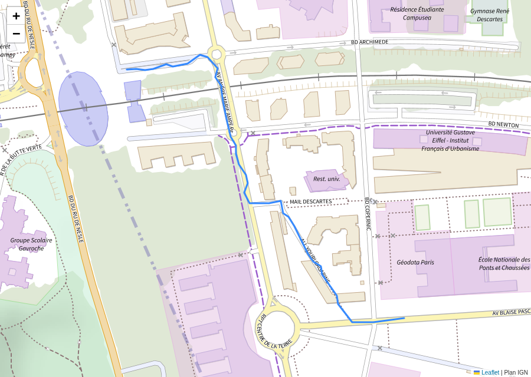

TD 5b — Un environnement pour le programme#
Note
Les fichiers des TD de la séance sont dans l’archive info01-cours5.zip.
Ce guide a trois parties. La présentation décrit le but du TD et ses étapes. L’énoncé donne, pour chaque étape, l’objectif, les consignes et le test à faire. Les solutions expliquent chaque commande, donnent ce que l’étape fait constater, et la marche à suivre si le résultat diffère.
Présentation du TD#
Objectif du TD#
Au TD 5a, carte_trace.py échoue, car le poste n’a ni folium ni ogr2ogr. L’environnement carte,
dont la création a démarré au TD 5a, contient ces deux outils. Il reste à vérifier cet environnement,
à l’activer, puis à lancer le programme.
À la fin du TD, le programme affiche :
$ python carte_trace.py trace_2.gpx
altitude minimale : 91.3 m
altitude maximale : 99.7 m
max - min : 8.4 m
cumul en hausse : 29.2 m
cumul en baisse : 26.9 m
distance parcourue : 632.3 m
vitesse moyenne : 1.29 m/s, soit 4.6 km/h
carte écrite : trace_2.html
La page trace_2.html affiche la trace sur le Plan IGN :

Les étapes#
Le TD dure vingt minutes.
Environnement créé.
Activation de l’environnement.
Programme dans l’environnement.
Programme sans activation.
Les notions employées#
Notion |
Diapositive |
|---|---|
création d’un environnement |
« Environnement : création et dossier » |
|
« Activation d’un environnement : effet sur PATH » |
|
« Activation : recherche des dépendances » |
commandes |
« Commandes conda : résumé » |
Énoncé#
Étape 1 · Environnement créé#
Objectif : attendre la fin de
conda create, puis vérifier que l’environnementcartecontientogr2ogretfolium.
Consignes
Revenir au second terminal : cliquer sur son nom, dans la liste des terminaux.
Attendre la fin de
conda create.Revenir au premier terminal, et afficher les environnements :
conda env list
Lister le dossier de l’environnement :
ls ~/.conda/envs/carte
Chercher le programme et la bibliothèque :
ls ~/.conda/envs/carte/Library/bin/ogr2ogr.exe ls ~/.conda/envs/carte/Lib/site-packages/folium
Test
À la fin de la création, le second terminal affiche :
#
# To activate this environment, use
#
# $ conda activate carte
#
# To deactivate an active environment, use
#
# $ conda deactivate
conda env list affiche base et carte. ls ~/.conda/envs/carte affiche, parmi d’autres,
python.exe, Lib, Library et Scripts. Les deux dernières commandes affichent ogr2ogr.exe,
puis les fichiers de folium, dont __init__.py.
Si conda create s’est arrêté sur une erreur, voir la
solution de l’étape 1.
Étape 2 · Activation de l’environnement#
Objectif : activer
carte, puis déterminer quelspythonetogr2ogrle terminal lance.
Consignes
Activer l’environnement :
conda activate carte
Afficher le chemin des deux commandes :
which python which ogr2ogr
Afficher le dernier dossier où Python cherche un module :
python -c "import sys; print(sys.path[-1])"
Test
L’invite commence par (carte), et les trois commandes affichent chacune un chemin. La
solution de l’étape 2 donne les chemins attendus, et la marche à suivre si
conda activate affiche une erreur.
Étape 3 · Programme dans l’environnement#
Objectif : lancer
carte_trace.pysurtrace_2.gpxdans l’environnementcarte, puis ouvrir la cartetrace_2.html.
Consignes
Aller dans le dossier du TD, et copier ses fichiers dans
travail/:cd ../../5b_environnement cp depart/* travail/ cd travail
Lancer le programme :
python carte_trace.py trace_2.gpx
Lister les fichiers écrits :
ls
Ouvrir la carte :
start trace_2.html
Test
Le programme affiche le résumé donné dans la présentation, et se termine par
carte écrite : trace_2.html. ls affiche, en plus des fichiers copiés, trace_2.csv,
trace_2.geojson, trace_2.html et resume.txt. Le navigateur affiche la trace sur le Plan IGN.
Si le programme s’arrête sur une erreur, ou si la carte reste grise ou vide, voir la solution de l’étape 3.
Étape 4 · Programme sans activation#
Objectif : déterminer si
carte_trace.pyfonctionne sans activercarte.
Consignes
Désactiver l’environnement :
conda deactivate
Relancer le programme :
python carte_trace.py trace_2.gpx
Réactiver l’environnement, puis relancer le programme :
conda activate carte python carte_trace.py trace_2.gpx
Test
Après conda deactivate, l’invite commence par (base). Après conda activate carte, elle commence
par (carte), et le programme se termine par carte écrite : trace_2.html. La
solution de l’étape 4 donne le résultat du lancement sans activation.
Solutions#
Solution de l’étape 1#
conda env list affiche les environnements connus de conda, et une étoile marque l’environnement
actif. Dans la salle, le compte élève ne peut pas modifier anaconda3 : conda écrit donc
l’environnement dans C:\Users\<nom>\.conda\envs\carte. Dans Git Bash, ~ désigne C:\Users\<nom>.
Ce dossier a la même organisation que le dossier d’une distribution :
Emplacement |
Contenu |
|---|---|
|
l’interpréteur de l’environnement |
|
|
|
|
Si le second terminal affiche CondaHTTPError, voir l’annexe « Problèmes avec Anaconda », cas A9.
Si conda demande d’accepter les conditions d’utilisation, ou s’arrête sur
CondaToSNonInteractiveError, voir le cas A10 de la même annexe. Relancer ensuite la commande du
TD 5a :
conda create -y -n carte -c conda-forge python=3.12 gdal folium
Si carte n’apparaît pas dans la liste alors que la commande a réussi, voir le cas A11 de la même
annexe.
Solution de l’étape 2#
Après conda activate carte, les trois commandes affichent :
/c/Users/<nom>/.conda/envs/carte/python
/c/Users/<nom>/.conda/envs/carte/Library/bin/ogr2ogr
C:\Users\<nom>\.conda\envs\carte\Lib\site-packages
conda activate carte place les dossiers de l’environnement en tête de PATH, pour ce terminal.
which python et which ogr2ogr trouvent donc les fichiers de carte. Cet interpréteur calcule
sys.path à partir de son propre dossier : sys.path[-1], le dernier dossier de la liste, est le
site-packages de l’environnement.
Si conda activate affiche EnvironmentNameNotFound: Could not find conda environment: carte, la
création n’est pas terminée, ou elle a échoué : revenir à l’étape 1.
Solution de l’étape 3#
carte_trace.py exécute, dans l’ordre :
ogr2ogrconvertit le GPX en CSV, danstrace_2.csv.stats_trace.pylit ce CSV, affiche le résumé et écritresume.txt.ogr2ogrconvertit le GPX en GeoJSON, danstrace_2.geojson.foliumécrit la page webtrace_2.html.
Si le programme s’arrête, ou si la carte ne s’affiche pas :
ModuleNotFoundError: No module named 'folium': l’invite ne commence pas par(carte). Lancerconda activate carte.python: can't open file, suivi decarte_trace.py: le terminal n’est pas danstravail/.pwdaffiche le dossier courant, qui doit se terminer par5b_environnement/travail.La carte reste grise ou vide : la page charge Leaflet et le fond de carte par le réseau. Voir l’annexe « Problèmes de réseau et de compte », cas R1. Le résumé affiché dans le terminal ne dépend pas du réseau.
Solution de l’étape 4#
Sans activation, le programme se termine par :
ModuleNotFoundError: No module named 'folium'
conda deactivate retire les dossiers de carte de PATH. python désigne de nouveau l’interpréteur
de base, et aucun dossier de son sys.path ne contient folium, d’où l’erreur. conda activate carte replace les dossiers de carte en tête de PATH. Aucun fichier du projet ni de l’environnement
ne change entre ces trois lancements.
Le TD 5c reprend ce terminal, avec carte activé.